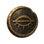
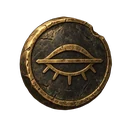
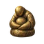
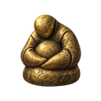

Forsaken Medallion
forsakenMedallionStarter relic
48 / 64 / 128 px
A heavy round old medallion suspended from one short frayed muted burgundy ribbon folded through its top loop. Its gold face is worn almost completely smooth; thin uneven remnants of antique gilding cling to charcoal-dark metal around the rim. A single broad pale gold scuff suggests remembered nobility, no readable emblem. Almost frontal three-quarter view. Lore: Its face is worn smooth, but it still remembers being gold.
Original PNG · Exact prompt512px WebP · 256px WebP · 128px WebP · 64px WebP
Starstone Shard
starstoneShardStarter relic
48 / 64 / 128 px
One asymmetrical elongated broken indigo starstone crystal, pointed top leaning slightly right, broad angular base and bold large facets. A subdued pale blue-white inner seam suggests a quiet magical hum. Tiny antique gold mineral inclusions only along one fracture. Dark violet and slate blue body with luminous but restrained facet edges; no mounting, no pedestal. Lore: A chip of someone else's genius. It still hums.
Original PNG · Exact prompt512px WebP · 256px WebP · 128px WebP · 64px WebP
Cutpurse's Coin
cutpursesCoinStarter relic


48 / 64 / 128 px
One thick tarnished antique gold coin seen near frontally at a slight angle, bold circular silhouette with one subtly clipped edge. Its worn face bears a simple large embossed closed eye crossed by a short horizontal stroke, a visual motif for purchased silence; no letters or numbers. Charcoal recessed surface, rubbed gold raised rim and worn relief, a restrained olive patina. Single coin only, no stack. Lore: One face buys silence. The other buys speed.
Original PNG · Exact prompt512px WebP · 256px WebP · 128px WebP · 64px WebP
Gold Figurine
goldFigurineStarter relic


48 / 64 / 128 px
One tiny squat antique gold devotional figurine, a solid heavy rounded idol with small bowed featureless head, broad hunched shoulders and large arms folded protectively over its compact belly. Thick integral rounded base, no separate pedestal. Worn softly dented gold with charcoal crevices and warm muted ochre highlights. Front three-quarter view, simple welcoming protective silhouette, ancient and tender, not cute cartoon. This is a carved relic object, not a living character. Lore: It is very small and very heavy and it loves you.
Original PNG · Exact prompt512px WebP · 256px WebP · 128px WebP · 64px WebP